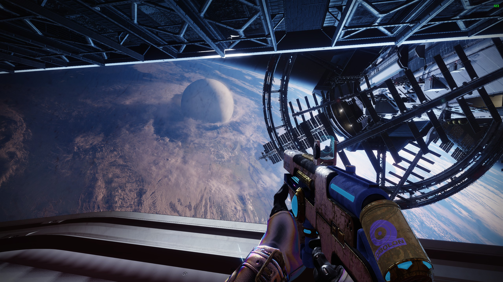

It's Dangerous to Go Alone
For better or worse, Destiny relies heavily on third-party tools. This is slowly changing, but only in bits and pieces. Just last year, we received an update that shows the numerical value of a piece of equipment's stats. Previously, you had to rely entirely on tools outside of the game. While things are improving game-side, third-party tools have had a decade to improve, and so they are not easily replaced. While we may receive a way to see what weapon the weekly Nightfall will drop in-game, there is little to no chance we will get a way to see all possible perks for a given weapon.
That's where third-party tools come to play. Here is a list of my most used tools:
Become Efficient
Just an action as simple as moving a weapon from one character to another is vastly streamlined with DIM. Without DIM, the first character flies to the tower, puts the weapon in the vault, logs out, new character logs in, flies to the tower, and gets the gun from the vault. With DIM? Drag and drop. Technically two button presses if you do it by hand. Armor Picker will automatically pick the best gear pieces to meet parameteres you set, streamlining build crafting. D2Foundry is the best way to theory craft weapon rolls. Light.gg is a compendium of every item in the game. Destiny Recipies helps immensly with cleaning vaults.
Is This Poor Game Design?
No, I don't think so, though going on a decade with only so much as a basic loadout system is a bit lazy. I don't think it's bad game design, I think it's lazy (or maybe just cost effective). The problem is Bungie seems to be stuck in the mindset of working hard creates hard work. An internal memo (or closed invester meeting?) leaked, effectively saying that they will never create another DLC like Forsake (widely regarded as the best DLC in Destiny history), because it sets the bar too high. While this may functionally be true, it's hard for the leyman to really fathom the work that goes into a project like this. Statements like "not setting the bar too high" come off as a copout, or cash grab.
Anyway, here's a picture of another Destiny 2 skybox:
